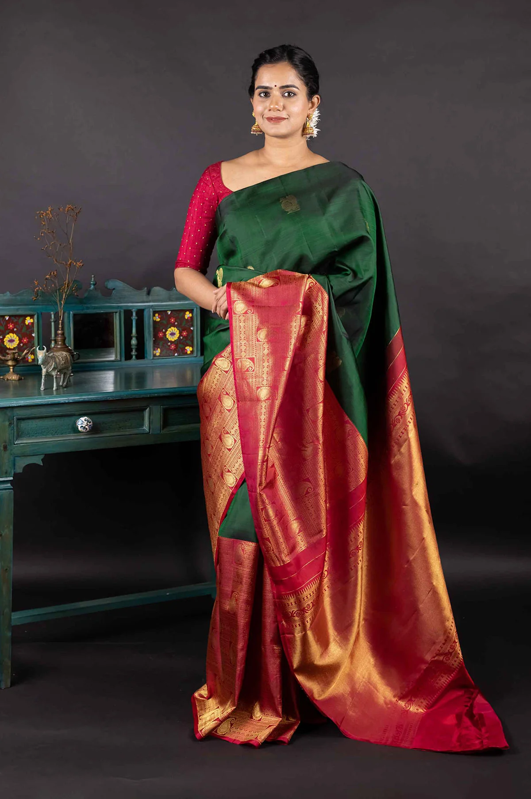

Kanchipuram Sarees
While originally from Tamil Nadu, Kanchipuram sarees have found a special place in Karnataka’s traditional wardrobe, especially during significant ceremonies and religious events. Woven with very heavy silk, intricate borders, and gold threadwork. Most of the time, these designs included images of temples, flowers, and even stories from mythology, hence turning each piece into a masterpiece.